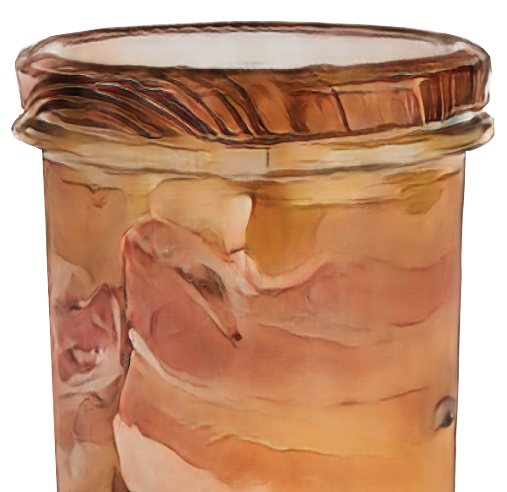
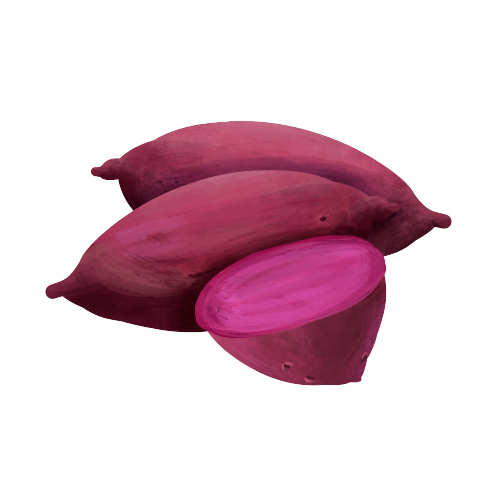

【Rice in Bambootube】
【Rice in Bambootube】Rice in Bambootube is a traditional cooking method used by Atayal people, where rice is cooked inside bamboo tubes. After the rice has been soaked in water for eight hours, it is stuffed inside the tubes, which are then sealed with ginger leaves. After the bamboo tubes have been steamed or boiled, the rice is very fragrant and has the scent of the ginger leaves.  【Tmmyan】
In traditional Atayal life, no electricity meant no refrigerators could be used to preserve foods which would typically spoil. Atayal people instead used salt to preserve meat and fish in a method called Tmmyan. The meat would be cut into small chunks and covered in salt before a layer was placed in a jar, with a layer of half-boiled rice added on top.These layers were repeated until the jar was full, and sealed for at least one month. Once opened the meat would remain safe to eat for half a year.  【Purple potato】
One of the main staple food in Atayal society. 【Banana sticky rice】
Steamed glutinous rice is mixed with mashed bananas, tied with banana leaves and served steamed.